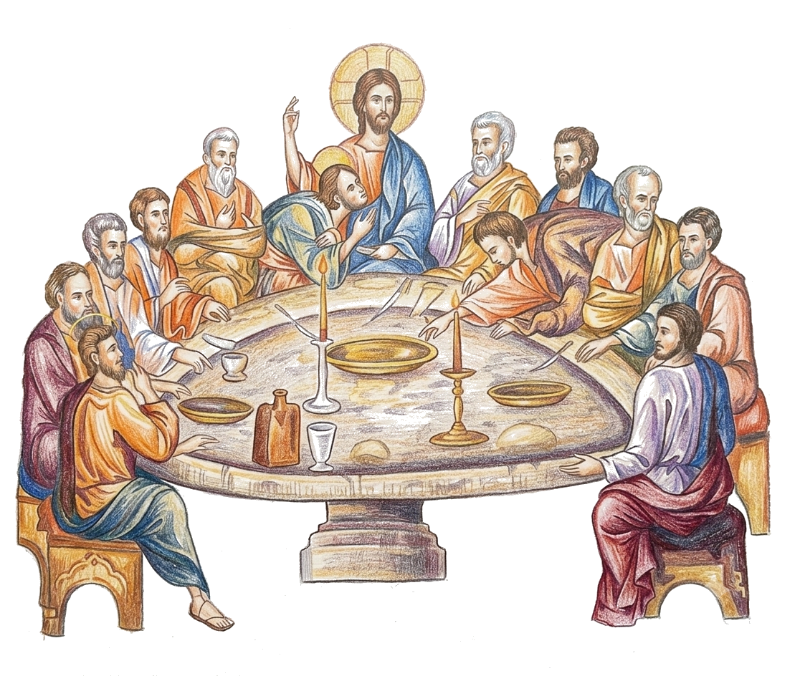

Although the priest “clothed in the priesthood of Christ” offers the eucharistic sacrifice to God …, he is acting not only for the congregation present but also with them, thus forming the fullness of the Church. The people of God, the “fruit of whose lips” the priest sets forth as a sacrifice of praise, are just as essential for the Eucharist as the priest.”10
“The worshipping Church thus really represents (makes present, actualizes) the whole Christ: the Head and the Body, the Divine and the Human, the Gift and its Acceptance; and the Orthodox Church, as expressed in her liturgy, is neither clerical (the clergy being the only active element, and laity the passive one) nor egalitarian (which implies that there is a confusion between clergy and laity…).”11
“It means that ‘Do this in remembrance (anamnesis*) of Me.’ (1 Cor. 11.24). And this means: ‘What I have done alone, I give it now to you – the perfect Eucharist of my Life, my Humanity totally deified. The food which we now eat together in unity of love, let it become your participation in my Body and Blood, in my sacrifice, in my Victory…’
‘What I have done’ now becomes the gift of God. Food is always the gift of God for it is a gift of life, and all life comes from God. Food is always and essentially “sacramental”, for through our “communion to it,” it is always transformed into man’s body and blood, into his life. But now this Sacrament is fulfilled, attaining its new and ultimate meaning. It becomes the gift of New Life, the one which Christ achieved personally and which, in His love for us, He gives to us.
‘There is no life without food, there is no new life without new food; it is Christ Himself that becomes the gift of food.’

“Unless you eat the flesh of the Son of Man and drink His blood, you have no life in you.” St John 6.53